Kubernetes
Table of Contents
- 1. Resources
- 1.1. Overview
- 1.2. Pod
- 1.3. ReplicationController
- 1.4. ReplicaSet
- 1.5. DaemonSet
- 1.6. Job
- 1.7. CronJob
- 1.8. Service
- 1.9. Volume
- 1.10. ConfigMap & Secret
- 1.11. Deployment
- 1.12. StatefulSet
- 2. Internals
- 3. Security
- 4. Computation Resources
- 5. AutoScaling
- 6. Scheduling
- 7. Utils
- 7.1. YAML Basic
- 7.2. Bash completion
- 7.3. Show all supported resources
- 7.4. Expose pod through Service
- 7.5. Run Temporary Pod
- 7.6. Discover possible API object fields
- 7.7. Forward local network port to port in the pod
- 7.8. Communicate with Pods through API Server
- 7.9. Connect to Services through API Server
- 7.10. Obtain the log of crashed container
- 7.11. Get IPs of all nodes
- 7.12. Talking to API Server
- 7.13. Modify Deployments and other resources
- 7.14. Check status of Control Plane components
- 7.15. WATCHING Resources
- 7.16. Observing cluster events
- 7.17. Forcely shutdown pod
- 7.18. Copy file from/to container
- 7.19. Mounting local files into the minikube vm
- 7.20. Using minikube docker daemon
- 7.21. Build images locally and load remotely
- 7.22.
kubectl config
| Author | Hao Ruan (haoru@cisco.com) |
| Date | 2019-04-17 10:50:56 |
Table of Contents
- 1. Resources
- 1.1. Overview
- 1.2. Pod
- 1.3. ReplicationController
- 1.4. ReplicaSet
- 1.5. DaemonSet
- 1.6. Job
- 1.7. CronJob
- 1.8. Service
- 1.9. Volume
- 1.10. ConfigMap & Secret
- 1.11. Deployment
- 1.12. StatefulSet
- 2. Internals
- 3. Security
- 4. Computation Resources
- 5. AutoScaling
- 6. Scheduling
- 7. Utils
- 7.1. YAML Basic
- 7.2. Bash completion
- 7.3. Show all supported resources
- 7.4. Expose pod through Service
- 7.5. Run Temporary Pod
- 7.6. Discover possible API object fields
- 7.7. Forward local network port to port in the pod
- 7.8. Communicate with Pods through API Server
- 7.9. Connect to Services through API Server
- 7.10. Obtain the log of crashed container
- 7.11. Get IPs of all nodes
- 7.12. Talking to API Server
- 7.13. Modify Deployments and other resources
- 7.14. Check status of Control Plane components
- 7.15. WATCHING Resources
- 7.16. Observing cluster events
- 7.17. Forcely shutdown pod
- 7.18. Copy file from/to container
- 7.19. Mounting local files into the minikube vm
- 7.20. Using minikube docker daemon
- 7.21. Build images locally and load remotely
- 7.22.
kubectl config
1 Resources
1.1 Overview
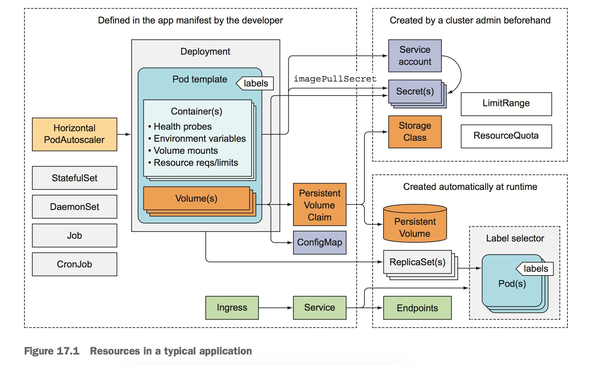
1.2 Pod
1.2.1 YAML Definition
定义文件主要包含：
- API version
- Resource type
- Metadata
Includes the name, namespace, labels, and other information about the pod. - Spec
Contains the actual description of the pod’s contents, such as the pod’s con- tainers, volumes, and other data. - Status
Contains read-only runtime data that shows the state of the resource at a given moment.
When creating a new pod, you never need to provide the status part.
apiVersion: v1 kind: Pod metadata: name: kubia-manual spec: containers: - image: luksa/kubia name: kubia ports: - containerPort: 8080 # the port the app is listening on protocol: TCP
在 POD 定义文件中定义 ports 是可选的行为，端口始终可以被访问，主要是为了方便用户清楚的了解提供了哪些服务。
1.2.2 Label
A label is an arbitrary key-value pair you attach to a resource,
which is then utilized when selecting resources using label selectors
(resources are filtered based on whether they include the label specified in the selector).

A label selector can select resources based on whether the resource:
- Contains (or doesn’t contain) a label with a certain key
- Contains a label with a certain key and value
- Contains a label with a certain key, but with a value not equal to the one you specify
1.2.3 Annotation
Annotations are also key-value pairs, so in essence, they’re similar to labels, but they aren’t meant to hold identifying information.
They can’t be used to group objects the way labels can. While objects can be selected through label selectors, there’s no such thing as an annotation selector.
Annotations can hold much larger pieces of information (up to 256 KB in total) and are primarily meant to be used by tools.
Annotations are also commonly used when introducing new features to Kubernetes. Usually, alpha and beta versions of new features don’t introduce any new fields to API objects. Annotations are used instead of fields, and then once the required API changes have become clear and been agreed upon by the Kubernetes developers, new fields are introduced and the related annotations deprecated. A great use of annotations is adding descriptions for each pod or other API object, so that everyone using the cluster can quickly look up information about each individual object. For example, an annotation used to specify the name of the person who created the object can make collaboration between everyone working on the cluster much easier.
1.2.4 Deleting
By deleting a pod, you’re instructing Kubernetes to terminate all the containers that are part of that pod.
Kubernetes sends a SIGTERM signal to the process and waits a certain number of seconds (30 by default) for it to shut down gracefully.
If it doesn’t shut down in time, the process is then killed through SIGKILL. To make sure your processes are always shut down gracefully, they need to handle the SIGTERM signal properly.
1.2.5 Liveness probes
As soon as a pod is scheduled to a node, the Kubelet on that node will run its containers and, from then on, keep them running as long as the pod exists.
If the container’s main process crashes, the Kubelet will restart the container.
Kubernetes can check if a container is still alive through liveness probes.
You can specify a liveness probe for each container in the pod’s specification. Kubernetes will periodically execute the probe and restart the container if the probe fails.
Kubernetes also supports readiness probes. Be sure not to confuse the two. They’re used for two different things.

Liveness: http-get http://:8080/ delay=0s timeout=1s period=10s #success=1 #failure=3 The delay=0s part shows that the probing begins immediately after the container is started. If you don’t set the initial delay, the prober will start probing the container as soon as it starts, which usually leads to the probe failing, because the app isn’t ready to start receiving requests. The timeout is set to only 1 second, so the container must return a response in 1 second or the probe is counted as failed. The container is probed every 10 seconds (period=10s) and the container is restarted after the probe fails three consecutive times (#failure=3).
1.2.6 Init Containers
Pods can also include init containers. Tthey can be used to initialize the pod.
apiVersion: v1 kind: Pod metadata: name: fortune-client spec: initContainers: # defining an init container, not a regular container. - name: init image: busybox command: - sh - -c - 'while true; do echo "Waiting for fortune service to come up..."; wget http://fortune -q -T 1 -O /dev/null >/dev/null 2>/dev/null && break; sleep 1; done; echo "Service is up! Starting main container."' # The init container runs a loop that runs until the fortune Service is up. containers: - image: busybox name: main command: - sh - -c - 'echo "Main container started. Reading fortune very 10 seconds."; while true; do echo "-------------"; wget -q -O - http://fortune; sleep 10; done'
1.2.7 Lifecycle hooks
Lifecycle hooks are specified per container, unlike init containers, which apply to the whole pod.
They're executed when the container starts and before it stops.
Lifecycle hooks are similar to liveness and readiness probes in that they can either:
- Execute a command inside the container
- Perform an HTTP GET request against a URL
Lifecycle hooks target containers, NOT PODS.
1.2.7.1 Post-Start hook
A post-start hook is executed immediately after the container's main process is started. Post-start hooks allow you to run additional commands without having to touch the app.
Until the hook completes, the container will stay in the Waiting state with the reason ContainerCreating.
The pod's status will be Pending instead of Running.
If the hook fails to run or returns a non-zero exit code, the main container will be killed.
1.2.7.2 Pre-Stop hook
A pre-stop hook is executed immediately before a container is terminated.
Container will be terminated regardless of the result of the hook (error HTTP response code or non-zero exit code when using a command-based hook) will not prevent the container from being terminated.
1.2.8 Shutdown
Then the following sequence of events is performed when pod is shutdown:
- Run the pre-stop hook, if one is configured, and wait for it to finish.
- Send the SIGTERM signal to the main process of the container.
- Wait until the container shuts down cleanly or until the termination grace period runs out.
- Forcibly kill the process with SIGKILL, if it hasn't terminated gracefully yet.
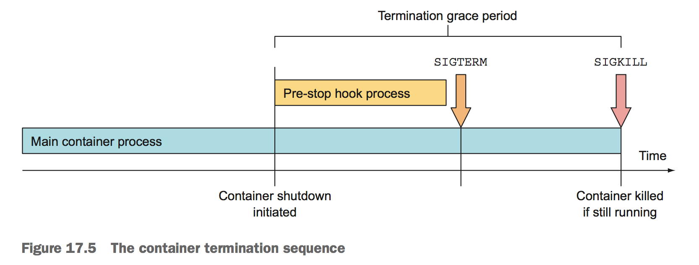
You can force the API server to delete the resource immediately, without waiting for confirmation,
by setting the grace period to zero and adding the --force option like this:
kubectl delete po mypod --grace-period=0 --force
1.3 ReplicationController
A ReplicationController’s job is to make sure that an exact number of pods always matches its label selector.
If it doesn’t, the ReplicationController takes the appropriate action to reconcile the actual with the desired number.

1.3.1 Three Parts Of A Replicationcontroller

A ReplicationController’s replica count, the label selector, and even the pod template can all be modified at any time, but only changes to the replica count affect existing pods.
1.3.2 Create
apiVersion: v1 kind: ReplicationController metadata: name: kubia spec: replicas: 3 selector: app: kubia # what pods the RC is operating on template: # pod templat for creating new pod metadata: labels: app: kubia spec: containers: - name: kubia image: luksa/kubia ports: - containerPort: 8080
The pod labels in the template must obviously match the label selector of the ReplicationController; otherwise the controller would create new pods indefinitely, because spinning up a new pod wouldn’t bring the actual replica count any closer to the desired number of replicas.
To prevent such scenarios, the API server verifies the ReplicationController definition and will not accept it if it’s misconfigured. Not specifying the selector at all is also an option. In that case, it will be configured automatically from the labels in the pod template.
Don’t specify a pod selector when defining a ReplicationController. Let Kubernetes extract it from the pod template. This will keep your YAML shorter and simpler.
Although a pod isn’t tied to a ReplicationController, the pod does reference it in the metadata.ownerReferences field,
which you can use to easily find which ReplicationController a pod belongs to.
1.3.3 Change Pod Template
A ReplicationController’s pod template can be modified at any time.
Changing the pod template is like replacing a cookie cutter with another one.
It will only affect the cookies you cut out afterward and will have no effect on the ones you’ve already cut.
To modify the old pods, you’d need to delete them and let the ReplicationController replace them with new ones based on the new template.

1.3.4 Delete RC without deleting Pods
When you delete a ReplicationController through kubectl delete, the pods are also deleted.
But because pods created by a ReplicationController aren’t an integral part of the ReplicationController, and are only managed by it,
you can delete only the ReplicationController and leave the pods running:
kubectl delete rc <rc-name> --cascade=false
1.4 ReplicaSet
You usually won’t create them directly, but instead have them created automatically when you create the higher-level Deployment resource.
A ReplicaSet behaves exactly like a ReplicationController, but it has more expressive pod selectors.
1.4.1 More Expressive Label Selectors
apiVersion: apps/v1beta2 kind: ReplicaSet metadata: name: kubia spec: replicas: 3 selector: matchExpressions: - key: app # this selector requires the pod to contain a label with the 'app' key operator: In values: - kubia template: metadata: labels: app: kubia spec: containers: - name: kubia image: luksa/kubia
Each expression must contain a key, an operator, and possibly (depending on the operator) a list of values.
Four valid operators:
- In
- Label’s value must match one of the specified values.
- NotIn
- Label’s value must not match any of the specified values.
- Exists
- Pod must include a label with the specified key (the value isn’t important). When using this operator, you shouldn’t specify the values field.
- DoesNotExist
- Pod must not include a label with the specified key. The values property must not be specified.
1.4.2 Only cares about number of pods
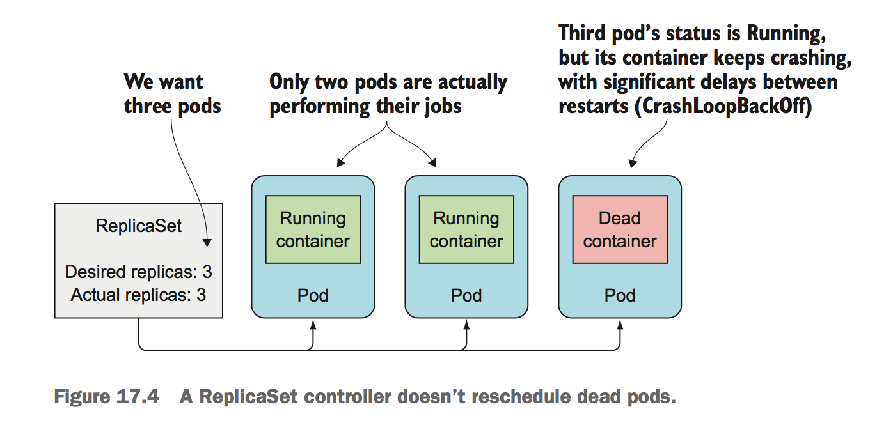
1.5 DaemonSet
DaemonSet is used when you want a pod to run on each and every node in the cluster
(and each node needs to run exactly one instance of the pod).

To run a pod on all cluster nodes, you create a DaemonSet object, which is much like a ReplicationController or a ReplicaSet,
except that pods created by a DaemonSet already have a target node specified and skip the Kubernetes Scheduler.
1.6 Job
In the event of a node failure, the pods on that node that are managed by a Job will be rescheduled to other nodes the way ReplicaSet pods are.
In the event of a failure of the process itself (when the process returns an error exit code),
the Job can be configured to either restart the container or not.
1.6.1 Definition
apiVersion: batch/v1 kind: Job metadata: name: batch-job spec: template: metadata: labels: app: batch-job spec: restartPolicy: OnFailure # Jobs can't use the default restart policy, which is Always containers: - name: main image: luksa/batch-job
Job pods can't use the default policy, because they're not meant to run indefinitely.
Need to explicitly set the restart policy to either OnFailure or Never.
1.6.2 Limit time for Job pod to complete
A pod's time can be limited by setting the activeDeadlineSeconds property in the pod spec.
If the pod runs longer than that, the system will try to terminate it and will mark the Job as failed.
You can configure how many times a Job can be retried before it is marked as failed by specifying the spec.backoffLimit field in the Job manifest. If you don't explicitly specify it, it defaults to 6.
1.7 CronJob
A CronJob creates Job resources from the jobTemplate property configured in the CronJob spec.
The Job then creates the pods.
1.8 Service
1.8.1 Overall
Although the primary purpose of services is exposing groups of pods to other pods in the cluster,
Both internal (by DNS or ENV) and external (by IP) clients usually connect to pods through services:

Label selectors determine which pods belong to the Service:

1.8.2 Creation
1.8.2.1 By kubectl expose
1.8.2.2 By YAML
apiVersion: v1 kind: Service metadata: name: kubia spec: ports: - port: 80 # the port this service will be available on targetPort: 8080 # the container port the service will forward to selector: app: kubia # all pods with the app=kubia label will be part of this service
1.8.2.2.1 Expose ports in same Service
When creating a service with multiple ports, you must specify a name for each port.
apiVersion: v1 kind: Service metadata: name: kubia spec: ports: - name: http port: 80 targetPort: 8080 - name: https port: 443 targetPort: 8443 selector: app: kubia
1.8.2.2.2 Using Named Ports

You can then refer to those ports by name in the service spec:

The biggest benefit of doing so is that it enables you to change port numbers later without having to change the service spec.
1.8.3 Session Affinity
If you want all requests made by a certain client to be redirected to the same pod every time,
you can set the service's sessionAffinity property to ClientIP (instead of None, which is the default).
This makes the service proxy redirect all requests originating from the same client IP to the same pod.
apiVersion: v1 kind: Service spec: sessionAffinity: ClientIP ...
1.8.4 Discovering Service
1.8.4.1 Through ENV
Dashes in the service name are converted to underscores and all letters are uppercased when the service name is used as the prefix in the environment variable's name.
1.8.4.2 Through DNS
kubia .default .svc.cluster.local
------------
service name
---------
namespace
------------------
configurable cluster domain suffix
You can omit the svc.cluster.local suffix and even the namespace, when pods are in the same namespace.
(This is because how /etc/resolv.conf is configured)
Whether a pod uses the internal DNS server or not is configurable through the 'dnsPolicy' property in each pod's spec.
1.8.5 Endpoints
Services don't link to pods directly, but Endpoints.
An Endpoints resource (plural) is a list of IP addresses and ports exposing a service.

Although the pod selector is defined in the service spec, it's not used directly when redirecting incoming connections. Instead, the selector is used to build a list of IPs and ports, which is then stored in the Endpoints resource. If you create a service without a pod selector, Kubernetes won't even create the Endpoints resource (after all, without a selector, it can't know which pods to include in the service). It's up to you to create the Endpoints resource to specify the list of endpoints for the service.
1.8.5.1 Manually config service endpoints
To create a service with manually managed endpoints, you need to create both a Service and an Endpoints resource.
Define a service called external-service that will accept incoming connections on port 80 (didn't define a pod selector for the service):
apiVersion: v1 kind: Service metadata: name: external-service # the name of the service must match the name of the Endpoints object spec: # this service has no selector defined ports: - port: 80
The Endpoints object needs to have the same name as the service and contain the list of target IP addresses and ports for the service:
apiVersion: v1 kind: Endpoints metadata: name: external-service # the name of the Endpoints object must match the name of the service subsets: - addresses: - ip: 11.11.11.11 # | IPs of the endpoints that the service will forward connections to - ip: 22.22.22.22 # | ports: - port: 80 # target port of the endpoints
After both the Service and the Endpoints resource are posted to the server,
the service is ready to be used like any regular service with a pod selector:

If you later decide to migrate the external service to pods running inside Kubernetes,
you can add a selector to the service, thereby making its Endpoints managed automatically.
The same is also true in reverse by removing the selector from a Service, Kubernetes stops updating its Endpoints.
This means a service IP address can remain constant while the actual implementation of the service is changed.
1.8.5.2 Creat alias for external service
apiVersion: v1 kind: Service metadata: name: external-service spec: type: ExternalName externalName: api.somecompany.com # fully qualified domain name of the actual service ports: - port: 80
After the service is created, pods can connect to the external service through the external-service.default.svc.cluster.local domain name.
ExternalName services are implemented solely at the DNS level: a simple CNAME DNS record is created for the service. Therefore, clients connecting to the service will connect to the external service directly, bypassing the service proxy completely. For this reason, these types of services don't even get a cluster IP.
1.8.6 Exposing Services To External Clients
A few ways to make a service accessible externally:
- Setting the service type to NodePort
- Setting the service type to LoadBalancer, an extension of the NodePort type
- Creating an Ingress resource
1.8.6.1 NodePort

An incoming connection to one of those ports will be redirected to a randomly selected pod,
which may or may not be the one running on the node the connection is being made to.
If you only point your clients to the first node, when that node fails, your clients can't access the service anymore. That's why it makes sense to put a load balancer in front of the nodes to make sure you're spreading requests across all healthy nodes and never sending them to a node that's offline at that moment.
1.8.6.1.1 YAML Definition
apiVersion: v1 kind: Service metadata: name: kubia-nodeport spec: type: NodePort ports: - port: 80 # port of the service's internal cluster IP targetPort: 8080 # target port of the backing pods nodePort: 30123 # service will be accessible through port 30123 of each of cluster nodes selector: app: kubia
Specifying the port isn't mandatory; Kubernetes will choose a random port if you omit it.
1.8.6.2 LoadBalancer
Kubernetes clusters running on cloud providers usually support the automatic provision of a load balancer from the cloud infrastructure.
The load balancer will have its own unique, publicly accessible IP address and will redirect all connections to your service.
You can thus access your service through the load balancer's IP address.
If Kubernetes is running in an environment that doesn't support LoadBalancer services,
the load balancer will not be provisioned, but the service will still behave like a NodePort service.
That's because a LoadBalancer service is an extension of a NodePort service.
(LoadBalancer type service is still a NodePort service but with an additional infrastructure-provided load balancer)

1.8.6.2.1 YAML Definition
apiVersion: v1 kind: Service metadata: name: kubia-loadbalancer spec: type: LoadBalancer # this type of service obtains a load balancer from the infrastructur hosting the Kubernetes cluster ports: - port: 80 targetPort: 8080 selector: app: kubia
1.8.6.3 Ingress
One important reason is that each LoadBalancer service requires its own load balancer with its own public IP address,
whereas an Ingress only requires one, even when providing access to dozens of services.
Ingresses operate at the application layer of the network stack (HTTP) and can provide features such as cookie-based session affinity and the like,
which services can’t.

Ingress controller provisions a load balancer behind the scenes.
1.8.6.3.1 YAML Definition
apiVersion: extensions/v1beta1 kind: Ingress metadata: name: kubia spec: rules: - host: kubia.example.com # maps 'kubia.example.com' domain name to your service http: paths: - path: / # | all requests will be sent to port 80 of the kubia-nodeport service backend: # | serviceName: kubia-nodeport # | servicePort: 80 # |

Ingress controller didn’t forward the request to the service. It only used it to select a pod. (Most controllers work like this)
This affects the preservation of client IPs when external clients connect through the Ingress controller,
which makes them preferred over Services in certain use cases.
1.8.7 Readiness Probe
Kubernetes invokes the probe periodically and acts based on the result of the readiness probe.
If a pod reports that it’s not ready, it’s removed from the service. If the pod then becomes ready again, it’s re-added.
Unlike liveness probes, if a container fails the readiness check, it won’t be killed or restarted.
The effect is the same as when the pod doesn’t match the service’s label selector at all:

1.8.8 Headless
Kubernetes allows clients to discover pod IPs through DNS lookups.
Usually, when you perform a DNS lookup for a service, the DNS server returns a single IP (the service’s cluster IP).
By setting the clusterIP field to None in the service specification, the DNS server will return the pod IPs instead of the single service IP.
Instead of returning a single DNS A record, the DNS server will return multiple A records for the service,
each pointing to the IP of an individual pod backing the service at that moment.
A headless services still provides load balancing across pods, but through the DNS round-robin mechanism instead of through the service proxy.
1.8.9 External Traffic Issue
When an external client connects to a service through the node port (this also includes cases when it goes through the load balancer first),
the randomly chosen pod may or may not be running on the same node that received the connection.
An additional network hop is required to reach the pod, but this may not always be desirable.
You can prevent this additional hop by configuring the service to redirect external traffic only to pods running on the node that received the connection.
This is done by setting the externalTrafficPolicy field in the service's spec section:
spec: externalTrafficPolicy: Local ...
f a service definition includes this setting and an external connection is opened through the service's node port,
the service proxy will choose a locally running pod. If no local pods exist, the connection will hang.
You therefore need to ensure the load balancer forwards connections only to nodes that have at least one such pod.
1.8.9.1 Non-Preservation Of The Client's IP Issue
Usually, when clients inside the cluster connect to a service, the pods backing the service can obtain the client's IP address.
But when the connection is received through a node port, the packets' source IP is changed, because SNAT is performed on the packets.
The Local external traffic policy (externalTrafficPolicy: Local) described in the previous section affects the preservation of the client's IP,
because there's no additional hop between the node receiving the connection and the node hosting the target pod (SNAT isn't performed).
1.9 Volume
Volumes aren't top-level resources like pods, but are instead defined as a part of a pod and share the same lifecycle as the pod.
This means a volume is created when the pod is started and is destroyed when the pod is deleted.
Kubernetes volumes are a component of a pod and are thus defined in the pod's specification-much like containers. They aren't a standalone Kubernetes object and can not be created or deleted on their own.

1.9.1 Volume Types
- emptyDir
- A simple empty directory used for storing transient data.
- hostPath
- Used for mounting directories from the worker node's filesystem into the pod.
- gitRepo
- A volume initialized by checking out the contents of a Git repository.
- nfs
- An NFS share mounted into the pod.
- gcePersistentDisk, awsElasticBlockStore, azureDisk
- Cloud provider.
- cinder, cephfs, iscsi, flocker, glusterfs, quobyte, rbd, flexVolume, vsphere- Volume, photonPersistentDisk, scaleIO
- Network storage.
- configMap, secret, downwardAPI
- persistentVolumeClaim
1.9.2 emptyDir
An emptyDir volume is especially useful for sharing files between containers running in the same pod.
An emptyDir volume is the simplest type of volume, but other types build upon it. (After the empty directory is created, they then populate it with data)
apiVersion: v1 kind: Pod metadata: name: fortune spec: containers: - image: luksa/fortune name: html-generator volumeMounts: - name: html mountPath: /var/htdocs - image: nginx:alpine name: web-server volumeMounts: - name: html mountPath: /usr/share/nginx/html # the same volume as above is mounted at /usr/share/nginx/html as read-only readOnly: true ports: - containerPort: 80 protocol: TCP volumes: - name: html # mounted in the two containers above emptyDir: {}
1.9.2.1 The medium used
The emptyDir used as the volume was created on the actual disk of the worker node hosting the pod.
Kubernetes can create the emptyDir on a tmpfs filesystem (in memory instead of on disk).
To do this, set the emptyDir's medium to Memory:
volumes: - name: html emptyDir: medium: Memory
1.9.3 hostPath

It’s not a good idea to use a hostPath volume for regular pods, because it makes the pod sensitive to what node it’s scheduled to.
Remember to use hostPath volumes only if you need to read or write system files on the node. Never use them to persist data across pods.
1.9.4 PV/PVC

Instead of the developer adding a technology-specific volume to their pod, it’s the cluster administrator who sets up the underlying storage and then
registers it in Kubernetes by creating a PersistentVolume resource through the Kubernetes API server.
When a cluster user needs to use persistent storage in one of their pods, they first create a PersistentVolumeClaim manifest,
specifying the minimum size and the access mode they require.
The user then submits the PersistentVolumeClaim manifest to the Kubernetes API server,
and Kubernetes finds the appropriate PersistentVolume and binds the volume to the claim.
The PersistentVolumeClaim can then be used as one of the volumes inside a pod.
Other users cannot use the same PersistentVolume until it has been released by deleting the bound PersistentVolumeClaim.
1.9.4.1 Creating PersistentVolume
apiVersion: v1 kind: PersistentVolume metadata: name: mongodb-pv spec: capacity: storage: 1Gi # Defining the PersistentVolume's size accessModes: # Cwhether it can be read from and/or written to by a single node or by multiple nodes at the same time. - ReadWriteOnce - ReadOnlyMany persistentVolumeReclaimPolicy: Retain # After the claim is released, the PersistentVolume should be retained (not erased or deleted). # Have to manually delete pv when it is no more needed. (no deleted when pvc is deleted) hostPath: path: /tmp/mongodb
PersistentVolumes don’t belong to any namespace. They’re cluster-level resources like nodes.
(注: spec.capacity.storage 看起来只是用于匹配 PVC ，实际容量应以 Actual storage 为准)

1.9.4.1.1 Access Mode
- ReadWriteOnce
- Only a single node can mount the volume for reading and writing.
- ReadOnlyMany
- Multiple nodes can mount the volume for reading.
- ReadWriteMany
- Multiple nodes can mount the volume for both reading and writing.
RWO, ROX, and RWX pertain to the number of worker nodes that can use the volume at the same time, not to the number of pods!
1.9.4.2 Creating PersistentVolumeClaim
apiVersion: v1 kind: PersistentVolumeClaim metadata: name: mongodb-pvc spec: resources: requests: storage: 1Gi accessModes: - ReadWriteOnce storageClassName: "" # Specifying an empty string as the storage class name ensures the PVC binds to a pre-provisioned PV instead of dynamically provisioning a new one.
As soon as you create the claim, Kubernetes finds the appropriate PersistentVolume and binds it to the claim.
The PersistentVolume’s capacity must be large enough to accommodate what the claim requests.
Additionally, the volume’s access modes must include the access modes requested by the claim.
1.9.4.3 Using PersistentVolumeClaim in Pod
apiVersion: v1 kind: Pod metadata: name: mongodb spec: containers: - image: mongo name: mongodb volumeMounts: - name: mongodb-data mountPath: /data/db ports: - containerPort: 27017 protocol: TCP volumes: - name: mongodb-data persistentVolumeClaim: claimName: mongodb-pvc # referenced by name

1.9.4.4 Dynamic Provisioning of PV
Cluster administrator can define StorageClass and let the system create a new PersistentVolume each time one is requested through a PersistentVolumeClaim.
Similar to PersistentVolumes, StorageClass resources aren’t namespaced.

1.9.4.4.1 Defining StorageClass
apiVersion: storage.k8s.io/v1 kind: StorageClass metadata: name: fast provisioner: k8s.io/minikube-hostpath # The volume plugin to use for provisioning the PersistentVolume parameters: # Parameterd passed to the provisioner type: pd-ssd
1.9.4.4.2 Requesting the SC in a PVC
apiVersion: v1 kind: PersistentVolumeClaim metadata: name: mongodb-pvc spec: storageClassName: fast resources: requests: storage: 100Mi accessModes: - ReadWriteOnce
The provisioner is used even if an existing manually provisioned PersistentVolume matches the PersistentVolumeClaim.
1.9.4.4.3 Creating a PVC Without SC
apiVersion: v1 kind: PersistentVolumeClaim metadata: name: mongodb-pvc2 spec: resources: requests: storage: 100Mi accessModes: - ReadWriteOnce
The default storage class is what's used to dynamically provision a PersistentVolume if the PersistentVolumeClaim doesn't explicitly say which storage class to use.
1.9.4.4.4 Forcing a PVC to Be Bound to One of The Pre-Provisioned PVs
Explicitly set storageClassName to "" if you want the PVC to use a pre-provisioned PersistentVolume.
1.10 ConfigMap & Secret
1.10.1 Basic
1.10.1.1 Overriding the command and arguments
In Kubernetes, when specifying a container, you can choose to override both ENTRYPOINT and CMD.

In most cases, you’ll only set custom arguments and rarely override the command
(except in general-purpose images such as busybox, which doesn’t define an ENTRYPOINT at all).
The command and args fields can’t be updated after the pod is created.
1.10.1.2 Specifing env variables
kind: Pod spec: containers: - image: luksa/fortune:env env: # Adding a single variable to the environment variable list - name: INTERVAL value: "30" name: html-generator
env: - name: FIRST_VAR value: "foo" - name: SECOND_VAR value: "$(FIRST_VAR)bar" # Referring to other environment variables
1.10.2 ConfigMap

1.10.2.1 Creating
1.10.2.1.1 CLI
kubectl create configmap my-config \ --from-file=foo.json \ # A single file --from-file=bar=foobar.conf \ # A file stored under a custom key --from-file=config-opts/ \ A whole directory --from-literal=some=thing # A literal value

1.10.2.1.2 YAML
apiVersion: v1 kind: ConfigMap metadata: name: fortune-config data: sleep-interval: "25"
1.10.2.2 Passing CM to Container
1.10.2.2.1 As ENV

Passing all entries of a ConfigMap as environment variables at once
spec: containers: - image: some-image envFrom: # Using envFrom instead of env - prefix: CONFIG_ # All environment variables will be prefixed with CONFIG_. configMapRef: name: my-config-map # Referencing the ConfigMap called my-config-map
The prefix is optional, so if you omit it the environment variables will have the same name as the keys.
Passing a ConfigMap entry as a command-line argument
You can’t reference ConfigMap entries directly in the
pod.spec.containers.argsfield, but you can first initialize an environment variable from the ConfigMap entry and then refer to the variable inside the arguments:
1.10.2.2.2 As Volume
A configMap volume will expose each entry of the ConfigMap as a file.
The process running in the container can obtain the entry’s value by reading the contents of the file.
apiVersion: v1 kind: Pod metadata: name: fortune-configmap-volume spec: containers: - image: luksa/fortune:env env: - name: INTERVAL valueFrom: configMapKeyRef: name: fortune-config key: sleep-interval name: html-generator volumeMounts: - name: html mountPath: /var/htdocs - image: nginx:alpine name: web-server volumeMounts: - name: html mountPath: /usr/share/nginx/html readOnly: true - name: config mountPath: /etc/nginx/conf.d # mount configMap volume at this location readOnly: true - name: config mountPath: /tmp/whole-fortune-config-volume readOnly: true ports: - containerPort: 80 name: http protocol: TCP volumes: - name: html emptyDir: {} - name: config configMap: # the volume refers to fortune-config ConfigMap name: fortune-config

Exposing Certain ConfigMap Entries in the Volume
apiVersion: v1 kind: Pod metadata: name: fortune-configmap-volume-with-items spec: containers: - image: luksa/fortune:env name: html-generator volumeMounts: - name: html mountPath: /var/htdocs - image: nginx:alpine name: web-server volumeMounts: - name: html mountPath: /usr/share/nginx/html readOnly: true - name: config mountPath: /etc/nginx/conf.d/ readOnly: true ports: - containerPort: 80 protocol: TCP volumes: - name: html emptyDir: {} - name: config configMap: name: fortune-config items: # select which entries to include in the volume by listing them - key: my-nginx-config.conf # entry under this key included path: gzip.conf # entry's value should be stored in this file
Mounting Individual ConfigMap Entries as Files without Hiding Other Files in the Directory


The 'subPath' property can be used when mounting any kind of volume. Instead of mounting the whole volume, you can mount part of it.
Setting the File Permissions for Files in a ConfigMap Volume
volumes: - name: config configMap: name: fortune-config defaultMode: "6600" # This sets the permissions for all files to -rw-rw------
1.10.3 Secret
Kubernetes helps keep your Secrets safe by making sure each Secret is only distributed to the nodes that run the pods that need access to the Secret.
Also, on the nodes themselves, Secrets are always stored in memory and never written to physical storage.
The maximum size of a Secret is limited to 1MB.
1.10.3.1 Default Token Secret
Every pod has a secret volume attached to it automatically, which represent everything you need to securely talk to the Kubernetes API server from within your pods, should you need to do that.
By default, the default-token Secret is mounted into every container, but you can disable that in each pod by setting the automountServiceAccountToken field in the pod spec to false or by setting it to false on the service account the pod is using.

1.10.3.2 Image Pull Secret
kubectl create secret docker-registry mydockerhubsecret \ --docker-username=myusername --docker-password=mypassword \ --docker-email=my.email@provider.com
apiVersion: v1 kind: Pod metadata: name: private-pod spec: imagePullSecrets: #| This enables pulling images - name: mydockerhubsecret #| from a private image registry. containers: - image: username/private:tag name: main
1.10.3.3 Passing Secret to Container
1.10.3.3.1 As Volume
apiVersion: v1 kind: Pod metadata: name: fortune-https spec: containers: - image: luksa/fortune:env name: html-generator env: - name: INTERVAL valueFrom: configMapKeyRef: name: fortune-config key: sleep-interval volumeMounts: - name: html mountPath: /var/htdocs - image: nginx:alpine name: web-server volumeMounts: - name: html mountPath: /usr/share/nginx/html readOnly: true - name: config mountPath: /etc/nginx/conf.d readOnly: true - name: certs # | Configured Nginx to read the cert and mountPath: /etc/nginx/certs/ # | key file from /etc/nginx/certs, so you readOnly: true # | need to mount the Secret volume there. ports: - containerPort: 80 - containerPort: 443 volumes: - name: html emptyDir: {} - name: config configMap: name: fortune-config items: - key: my-nginx-config.conf path: https.conf - name: certs # | Define the secret secret: # | volume here, referring to secretName: fortune-https # | the fortune-https Secret.

1.10.3.3.2 As ENV
env: - name: FOO_SECRET valueFrom: #| The variable should be set secretKeyRef: #| from the entry of a Secret. name: fortune-https # The name of the Secret holding the key key: foo # The key of the Secret to exopse
Think twice before using environment variables to pass your Secrets to your container, because they may get exposed inadvertently. To be safe, always use secret volumes for exposing Secrets.
1.11 Deployment
Deployment sits on top of ReplicaSets and enables declarative application updates.
The ReplicaSet(created by Deployment)'s name also contains the hash value of its pod template.

1.11.1 Updating Strategies
You have two ways of updating all those pods. You can do one of the following:
Delete all existing pods first and then start the new ones (Recreate)

Start new ones and, once they're up, delete the old ones
You can do this either by adding all the new pods and then deleting all the old ones at once, or sequentially, by adding new pods and removing old ones gradually.
Spinning up new pods and then deleting the old ones (blue-green deployment)

RollingUpdate
Should use this strategy only when your app can handle running both the old and new version at the same time.

1.11.2 Performing RU with kubectl
kubectl rolling-update kubia-v1 kubia-v2 --image=luksa/kubia:v2 # ===old rc=== ===new rc===
1.11.2.1 Steps Required Before RU
- Copying old controller to new controller and changing the image in its pod template.
- Add an additional
deploymentlabel in both origin and new contoller. - Modify the labels of the live pods.

After setting up all this, kubectl starts replacing pods by first scaling up the new controller to 1. The controller thus creates the first v2 pod. kubectl then scales down the old ReplicationController by 1.

1.11.3 Creating Deployment
apiVersion: apps/v1beta1 # Deployments are in the apps API group, version v1beta1. kind: Deployment metadata: name: kubia # There's no need to include the version info in the name of the Deployment. spec: replicas: 3 template: metadata: name: kubia labels: app: kubia spec: containers: - image: luksa/kubia:v1 name: nodejs
kubectl create -f kubia-deployment-v1.yaml --record
Be sure to include the --record command-line option when creating it. This records the command in the revision history.
1.11.4 Updating Deployment
The only thing you need to do is modify the pod template defined in the Deployment resource and Kubernetes will take all the steps necessary to get the actual system state to what's defined in the resource.


1.11.5 Rolling Back
Deployments make it easy to roll back to the previously deployed version by telling Kubernetes to undo the last rollout of a Deployment:
$ kubectl rollout undo deployment kubia
deployment "kubia" rolled back
The undo command can also be used while the rollout process is still in progress to essentially abort the rollout. Pods already created during the roll- out process are removed and replaced with the old ones again.
The length of the revision history is limited by the revisionHistoryLimit property on the Deployment resource.
1.11.6 maxSurge/maxUnavailable
spec: strategy: rollingUpdate: maxSurge: 1 maxUnavailable: 0 type: RollingUpdate
maxSurge
Determines how many pod instances you allow to exist above the desired replica count configured on the Deployment.
It defaults to 25%, so there can be at most 25% more pod instances than the desired count.
The value can also be an absolute value.maxUnavailable
Determines how many pod instances can be unavailable relative to the desired replica count during the update.
It also defaults to 25%, so the number of available pod instances must never fall below 75% of the desired replica count.
Can also specify an absolute value instead of a percentage.

1.11.7 Pausing Rollout Process
A Deployment can also be paused during the rollout process.
This allows you to verify that everything is fine with the new version before proceeding with the rest of the rollout.
$ kubectl set image deployment kubia nodejs=luksa/kubia:v4 deployment "kubia" image updated $ kubectl rollout pause deployment kubia deployment "kubia" paused # A single new pod should have been created, but all original pods should also still be running. # Once the new pod is up, a part of all requests to the service will be redirected to the new pod. # Once you're confident the new version works as it should, you can resume the deployment to replace all the old pods with new ones: $ kubectl rollout resume deployment kubia deployment "kubia" resumed
If a Deployment is paused, the 'undo' command won't undo it until you resume the Deployment.
1.11.8 Blocking Rollout (minReadySeconds)
minReadySeconds can be used to slow down the rollout, so you could see it was indeed performing a rolling update and not replacing all the pods at once.
But the main function of minReadySeconds is to prevent deploying malfunctioning versions, not slowing down a deployment for fun.
- This property specifies how long a newly created pod should be ready before the pod is treated as available.
- Until the pod is available, the rollout process will not continue.
- If a new pod's readiness probe starts failing before minReadySeconds have passed, the rollout of the new version will effectively be blocked.
With a properly configured readiness probe and a proper minReadySeconds setting, Kubernetes would have prevented us from deploying buggy version at an earlier stage. If only define the readiness probe without setting 'minReadySeconds' properly, new pods are considered available immediately when the first invocation of the readiness probe succeeds. If the readiness probe starts failing shortly after, the bad version is rolled out across all pods. Therefore, you should set 'minReadySeconds' appropriately.
When the rollout will never continue, the only thing to do now is abort the rollout by undoing it:
$ kubectl rollout undo deployment kubia
deployment "kubia" rolled back
1.12 StatefulSet
StatefulSet makes sure pods are rescheduled in such a way that they retain their identity and state.
StatefulSets were more like ReplicaSets and not like Deployments, so they don't perform a rollout when the template is modified.
Starting from Kubernetes version 1.7, StatefulSets support rolling updates the same way Deployments and DaemonSets do. See the StatefulSet's spec.updateStrategy field documentation using kubectl explain for more information.
1.12.1 设计思想
1.12.1.1 Stable Identity
Each pod created by a StatefulSet is assigned an ordinal index (zero-based),
which is then used to derive the pod's name and hostname, and to attach stable storage to the pod.
The names of the pods are thus predictable.

1.12.1.1.1 Governing Service
StatefulSet requires to create a corresponding governing headless Service that's used to provide the actual network identity to each pod.
Through this Service, each pod gets its own DNS entry, so its peers and possibly other clients in the cluster can address the pod by its hostname:
a-0 .foo .default .svc.cluster.local -------- ------------ --------- ---------------------------------- pod name service name namespace configurable cluster domain suffix
Additionally, we can also use DNS to look up all the StatefulSet's pods' names by looking up SRV records for the foo.default.svc.cluster.local domain.
SRV records are used to point to hostnames and ports of servers providing a specific service. Kubernetes creates SRV records to point to the hostnames of the pods backing a HEADLESS SERVICE.
1.12.1.1.2 Scaling
- Scaling the StatefulSet creates a new pod instance with the next unused ordinal index.
- Scaling down a StatefulSet always removes the instances with the highest ordinal index first.
ONLY ONE POD INSTANCE AT A TIME WHEN SCALING DOWN/UP: Because some stateful applications don't handle rapid scale-downs nicely, StatefulSets scale down ONLY ONE POD INSTANCE AT A TIME (for example: distributed data store may lose data if multiple nodes go down at the same time). For this exact reason, StatefulSets also never permit scale-down operations IF ANY OF THE INSTANCES ARE UNHEALTHY. If an instance is unhealthy, and you scale down by one at the same time, you've effectively lost two cluster members at once.
1.12.1.2 Stable Dedicated Storage
Each stateful pod instance needs to use its own storage, if a stateful pod is rescheduled the new instance must have the same storage attached to it.
StatefulSet uses volume claim templates to stamp out PersistentVolumeClaims along with each pod instance:

PersistentVolumeClaim remains after a scale-down:

1.12.1.3 Guarantees
A StatefulSet must guarantee at-most-one semantics for stateful pod instances.
This means a StatefulSet must be absolutely certain that a pod is no longer running before it can create a replacement pod.
Kubernetes master can only know that when the cluster administrator tells it so.
To do that, the admin needs to either delete the pod forcibly or delete the whole node.
UNDERSTANDING WHAT HAPPENS TO PODS WHOSE STATUS IS UNKNOWN If the pod's status remains UNKNOWN for more than a few minutes (this time is configurable), the pod is marked for deletion, and will be removed as soon as the Kubelet notifies the API server that the pod's containers have terminated. The only thing you can do is tell the API server to delete the pod without waiting for the Kubelet to confirm that the pod is no longer running: kubectl delete po <name> --force --grace-period 0
1.12.2 Deploying App through StatefulSet
To deploy app, you'll need to create two (or three) different types of objects:
PersistentVolumes for storing your data files
Need to create these only if the cluster doesn't support dynamic provisioning of PersistentVolumes.
- A governing Service required by the StatefulSet.
- The StatefulSet itself.
2 Internals
2.1 Architecture

- components of the control plane
- etcd
- api server
- scheduler
- controller manager
- components running on the worker nodes
- kubelet
- Kubernetes service proxy (kube-proxy)
- container runtime (Docker, rkt, or others)
- add-on components
- DNS server
- dashboard
- ingress controller
- heapster
- container network interface network plugin
Kubernetes system components communicate only with the API server. The API server is the only component that communicates with etcd.
Components on the worker nodes all need to run on the same node, the components of the Control Plane can easily be split across multiple servers.
2.1.1 etcd
Kubernetes stores all its data in etcd under /registry.
2.1.1.1 Optimistic Concurrency Control

All Kubernetes resources include a metadata.resourceVersion field, which clients need to pass back to the API server when updating an object.
If the version doesn't match the one stored in etcd, the API server rejects the update.
2.1.1.2 RAFT
2.1.2 API Server

Authentication Plugins
Extracts the client's username, user ID, and groups the user belongs to, that are then used in the next stage (Authorization).
Plugins are called in turn until one of them determines who is sending the request.Authorization Plugins
Determine whether the authenticated user can perform the requested action on the requested resource.
Plugins are called in turn until one plugin says the user can perform the action.- Admission Control Plugins
Modify the resource (or other related resources).
The resource passes through all plugins.
When the request is only trying to read data, the request doesn't go through the Admission Control.
2.1.2.1 Resource Changes Notification
API server doesn't create resources. That's what controllers in the Controller Manager do.
Control Plane components can request to be notified when a resource is created, modified, or deleted.

2.1.3 Scheduler
Scheduler doesn't instruct the selected node (or the Kubelet running on that node) to run the pod.
All the Scheduler does is update the pod definition through the API server. The API server then notifies the Kubelet
(through the WATCHING MECHANISM) that the pod has been scheduled.
2.1.4 Controller Manager
Actual work (create, update, delete…) is done by controllers running inside the Controller Manager.

(Replication Manager is a controller for ReplicationController resources)
2.1.5 Kublet
Kubelet is the component responsible for everything running on a worker node:
- Monitors running containers and reports their status, events, and resource consumption to the API server.
- Runs the container liveness probes, restarting containers when the probes fail.
- Terminates containers when their Pod is deleted from the API server and notifies the server that the pod has terminated.
2.1.5.1 Run Static Pods without API Server
Instead of running Kubernetes system components natively, you can put their pod manifests into the Kubelet's manifest directory and have the Kubelet run and manage them.

You can also use the same method to run your custom system containers, but doing it through a DaemonSet is the recommended method.
2.1.6 Kube-Proxy
kube-proxy's purpose is to make sure clients can connect to the services you define through the Kubernetes API.

2.1.7 Add-on
Add-on components are deployed as pods by submitting YAML manifests to the API server.
Some of these components are deployed through a Deployment resource or a ReplicationController resource, and some through a DaemonSet.
2.2 Cooperation between controllers


2.3 Pod
2.3.1 Infrastructure Container
The pause container is the infrastructure container that holds all the containers of a pod together.
All other user-defined containers of the pod then use the namespaces of the pod infrastructure container.

Actual application containers may die and get restarted. When such a container starts up again, it needs to become part of the same Linux namespaces as before.
If the infrastructure pod is killed in the meantime, the Kubelet recreates it and all the pod’s containers.
2.3.2 Inter-pod networking
The network is set up by Container Network Interface (CNI) plugin, not by Kubernetes itself.
2.3.2.1 Pods are connected NAT-less

2.3.2.2 Communication between nodes
Bridges across the nodes must use non-overlapping address ranges to prevent pods on different nodes from getting the same IP.

- Node’s physical network interface needs to be con- nected to the bridge as well.
- Routing tables on node A need to be configured so all packets destined for 10.1.2.0/24 are routed to node B.
- Node B’s routing tables need to be configured so packets sent to 10.1.1.0/24 are routed to node A.
This works only when nodes are connected to the same network switch, without any routers in between. It’s easier to use a Software Defined Network (SDN), which makes the nodes appear as though they’re connected to the same network switch, regardless of the actual underlying network topology, no matter how complex it is. Packets sent from the pod are encapsulated and sent over the network to the node running the other pod, where they are de-encapsulated and delivered to the pod in their original form.
2.3.2.3 Container Network Interface
To make it easier to connect containers into a network, a project called Container Network Interface (CNI) was started.
The CNI allows Kubernetes to be configured to use any CNI plugin that’s out there. These plugins include:
- Calico
- Flannel
- Romana
- Weave Net
See Reference.
2.4 High Availability


3 Security
3.1 Understanding Authentication
When a request is received by the API server, it goes through the list of authentication plugins, so they can each examine the request and try to determine who is sending the request.
The first plugin that can extract that information from the request returns the username, user ID, and the groups the client belongs to back to the API server core.
The API server stops invoking the remaining authentication plugins and continues onto the authorization phase.
Several authentication plugins are available. They obtain the identity of the client using the following methods:
- From the client certificate
- From an authentication token passed in an HTTP header
- Basic HTTP authentication
3.1.1 Users
Kubernetes distinguishes between two kinds of clients connecting to the API server:
- Actual humans (users)
- Pods (more specifically, applications running inside them)
Users are meant to be managed by an external system, such as a Single Sign On (SSO) system,
but the pods use a mechanism called service accounts, which are created and stored in the cluster as ServiceAccount resources.
In contrast, no resource represents user accounts, which means you can’t create, update, or delete users through the API server.
3.1.2 Group
Both human users and ServiceAccounts can belong to one or more groups.

3.1.3 Service Account
ServiceAccounts are resources just like Pods, Secrets, ConfigMaps, and so on, and are scoped to individual namespaces.
Each pod is associated with exactly one ServiceAccount, but multiple pods can use the same ServiceAccount:

When a request bearing the authentication token is received by the API server, the server uses the token to authenticate the client sending the request and then determines whether or not the related ServiceAccount is allowed to perform the requested operation. The API server obtains this information from the system-wide authorization plugin configured by the cluster administrator. One of the available authorization plugins is the role-based access control (RBAC) plugin.

The authentication tokens used in ServiceAccounts are JWT tokens.
3.1.3.1 Mountable Secrets
By default, a pod can mount any Secret it wants. But the pod’s ServiceAccount can be configured to only allow the pod to mount Secrets that are listed as mountable Secrets on the ServiceAccount.
To enable this feature, the ServiceAccount must contain the following annotation: kubernetes.io/enforce-mountable-secrets="true".
3.1.3.2 Image Pull Secrets
apiVersion: v1 kind: ServiceAccount metadata: name: my-service-account imagePullSecrets: - name: my-dockerhub-secret
Adding image pull Secrets to a ServiceAccount saves you from having to add them to each pod individually.
3.1.3.3 Assigning ServiceAccount to Pod
A pod’s ServiceAccount must be set when creating the pod. It can’t be changed later.
apiVersion: v1 kind: Pod metadata: name: curl-custom-sa spec: serviceAccountName: foo # uses customized service account instead of the default containers: - name: main image: tutum/curl command: ["sleep", "9999999"] - name: ambassador image: luksa/kubectl-proxy:1.6.2
When your cluster isn't using proper authorization, creating and using additional ServiceAccounts doesn't make much sense, since even the default ServiceAccount is allowed to do anything.
3.2 RBAC
RBAC prevents unauthorized users from viewing or modifying the cluster state.
The default ServiceAccount isn't allowed to view cluster state, let alone modify it in any way.
A subject (which may be a human, a ServiceAccount, or a group of users or ServiceAccounts) is associated with one or more roles and each role is allowed to perform certain verbs (actions) on certain resources.
The RBAC authorization rules are configured through four resources, which can be grouped into two groups:
Roles and ClusterRoles
Specify which verbs can be performed on which resources.
RoleBindings and ClusterRoleBindings
Bind the above roles to specific users, groups, or ServiceAccounts.
Roles define what can be done, while bindings define who can do it:

Role and RoleBinding are namespaced resources, whereas the ClusterRole and ClusterRoleBinding are cluster-level resources (not namespaced).
Although RoleBindings are namespaced, they can also reference ClusterRoles:

You can create a RoleBinding and have it reference a ClusterRole when you WANT TO ENABLE ACCESS TO NAMESPACED RESOURCES, you can't use the same approach for cluster-level (non-namespaced) resources. RoleBinding can’t grant access to cluster-level resources, even if it references a ClusterRoleBinding.
3.2.1 Role/RoleBinding
3.2.1.1 Create Role
apiVersion: rbac.authorization.k8s.io/v1 kind: Role metadata: namespace: foo # if namespace is omitted, the current namespace is used name: service-reader rules: - apiGroups: [""] # core apiGroup, which has no name - hence the "" verbs: ["get", "list"] # getting individual Services (by name) and listing all of them is allowed. resources: ["services"] # plural name must be used! # resourceNames: [] # limit access only to specific Service instances by specifying their names
The plural form must be used when specifying resources.
3.2.1.2 Binding Role to ServiceAccount
A Role defines what actions can be performed, but it doesn't specify who can perform them.
To do that, you must bind the Role to a subject, which can be a user, a ServiceAccount, or a group (of users or ServiceAccounts).
kubectl create rolebinding test --role=service-reader --serviceaccount=foo:default -n foo # you can check yaml definition by run: kubectl get rolebinding test -n foo -o yaml

To bind a Role to a user instead of a ServiceAccount, use the --user argument to specify the username. To bind it to a group, use --group.
3.2.1.2.1 Including ServiceAccounts from other namespaces
RoleBinding can add the other pod's ServiceAccount, even though it's in a different namespace:

3.2.2 ClusterRole/ClusterRoleBinding
Regular Role only allows access to resources in the same namespace the Role is in, and can't grant access to non-resource URLs (/healthz for example), but ClusterRoles can.
ClusterRole is a cluster-level resource for allowing access to non-namespaced resources or non-resource URLs or used as a common role to be bound inside individual namespaces, saving you from having to redefine the same role in each of them.
To grant access to cluster-level resources, you must always use a ClusterRoleBinding.


3.2.2.1 Access non-resource URLs
API server also exposes non-resource URLs.
Access to these URLs must also be granted explicitly; otherwise the API server will reject the client’s request.
Usually, this is done for you automatically through the system:discovery ClusterRole and the identically named ClusterRoleBinding.
$ kubectl get clusterrole system:discovery -o yaml apiVersion: rbac.authorization.k8s.io/v1 kind: ClusterRole metadata: name: system:discovery ... rules: - nonResourceURLs: # refers to non-resource URLs - /api - /api/* - /apis - /apis/* - /healthz - /swaggerapi - /swaggerapi/* - /version
3.2.2.2 Access namespaced resources
If you create a ClusterRoleBinding and reference the ClusterRole in it, the subjects listed in the binding can view the specified resources across all namespaces.
If, on the other hand, you create a RoleBinding, the subjects listed in the binding can only view resources in the namespace of the RoleBinding.


3.2.3 Combinations of role/binding types

3.2.4 Default CRs/CRBs
The most important roles are the view, edit, admin, and cluster-admin ClusterRoles.
They’re meant to be bound to ServiceAccounts used by user-defined pods.
view
Allowing read-only access to resources in a namespace, except for Roles, RoleBindings, and Secrets.
edit
Allows you to modify resources in a namespace, but also allows both reading and modifying Secrets.
It doesn’t, however, allow viewing or modifying Roles or RoleBindings (to prevent privilege escalation).admin
Complete control of the resources (except ResourceQuotas and Namespace) in a namespace.
The main difference between the edit and the admin ClusterRoles is in the ability to view and modify Roles and RoleBindings in the namespace.cluster-admin
Complete control of the Kubernetes cluster.
3.3 Use Node's namespaces
3.3.1 Use node’s network namespace
Certain pods (usually system pods) need to operate in the host’s default namespaces, allowing them to see and manipulate node-level resources and devices.

apiVersion: v1 kind: Pod metadata: name: pod-with-host-network spec: hostNetwork: true # Using the host node’s network namespace containers: - name: main image: alpine command: ["/bin/sleep", "999999"]
3.3.1.1 Use host port (not in host's nw ns)
Bind to a port in the node’s default namespace, but still have their own network namespace.
This is done by using the hostPort property in one of the container’s ports defined in the spec.containers.ports field.
Don’t confuse pods using hostPort with pods exposed through a NodePort service. They’re two different things:

Because two processes can’t bind to the same host port. The Scheduler takes this into account when scheduling pods,
so it doesn’t schedule multiple pods to the same node.
If you have three nodes and want to deploy four pod replicas, only three will be scheduled (_one pod will remain Pending_):

apiVersion: v1 kind: Pod metadata: name: kubia-hostport spec: containers: - image: luksa/kubia name: kubia ports: - containerPort: 8080 # The container can be reached on port 8080 of the pod’s IP. hostPort: 9000 # It can also be reached on port 9000 of the node it’s deployed on. protocol: TCP
The hostPort feature is primarily used for exposing system services, which are deployed to every node using DaemonSets. People also used it to ensure two replicas of the same pod were never scheduled to the same node.
3.3.2 Use node's PID/IPC namespaces
apiVersion: v1 kind: Pod metadata: name: pod-with-host-pid-and-ipc spec: hostPID: true # You want the pod to use the host’s PID namespace. hostIPC: true # You also want the pod to use the host’s IPC namespace. containers: - name: main image: alpine command: ["/bin/sleep", "999999"]
3.4 Container security context
3.4.1 Run container as specific user
What user the container runs as is specified in the container image. In a Dockerfile, this is done using the USER directive. If omitted, the container runs as root.
apiVersion: v1 kind: Pod metadata: name: pod-as-user-guest spec: containers: - name: main image: alpine command: ["/bin/sleep", "999999"] securityContext: runAsUser: 405 # specify a user ID, not a username (id 405 corresponds to the guest user in the alpine container image).
3.4.2 Run container as non-root
For example, when a host directory is mounted into the container, if the process running in the container is running as root,
it has full access to the mounted directory, whereas if it's running as non-root, it won't.
apiVersion: v1 kind: Pod metadata: name: pod-run-as-non-root spec: containers: - name: main image: alpine command: ["/bin/sleep", "999999"] securityContext: runAsNonRoot: true # This container will only be allowed to run as a non-root user.
If you deploy this pod, it gets scheduled, but is not allowed to run. So if anyone tampers with your container images, they won't get far.
3.4.3 Run container in privileged mode
To get full access to the node's kernel, the pod's container shall run in privileged mode.
apiVersion: v1 kind: Pod metadata: name: pod-privileged spec: containers: - name: main image: alpine command: ["/bin/sleep", "999999"] securityContext: privileged: true # This container will run in privileged mode
3.4.4 Add individual kernel capabilities
Instead of making a container privileged and giving it unlimited permissions, a much safer method (from a security perspective) is to give it access only to the kernel features it really requires.
apiVersion: v1 kind: Pod metadata: name: pod-add-settime-capability spec: containers: - name: main image: alpine command: ["/bin/sleep", "999999"] securityContext: capabilities: add: - SYS_TIME # Adding the SYS_TIME capability. When time is set in container, the node's time will also be changed
3.4.5 Drop individual kernel capabilities
apiVersion: v1 kind: Pod metadata: name: pod-drop-chown-capability spec: containers: - name: main image: alpine command: ["/bin/sleep", "999999"] securityContext: capabilities: drop: # | You’re not allowing this container - CHOWN # | to change file ownership.
3.4.6 Prevent writing to filesystem
Prevent the processes running in the container from writing to the container’s filesystem, and only allow them to write to mounted volumes.
apiVersion: v1 kind: Pod metadata: name: pod-with-readonly-filesystem spec: containers: - name: main image: alpine command: ["/bin/sleep", "999999"] securityContext: readOnlyRootFilesystem: true # This container’s filesystem can’t be written to. volumeMounts: - name: my-volume mountPath: /volume # | Writing to /volume is allowed, readOnly: false # | becase a volume is mounted there. volumes: - name: my-volume emptyDir:
3.4.7 Share volume among different users
Kubernetes allows you to specify supplemental groups for all the pods running in the container, allowing them to share files, regardless of the user IDs they’re running as.
apiVersion: v1 kind: Pod metadata: name: pod-with-shared-volume-fsgroup spec: securityContext: # | The fsGroup and supplementalGroups are defined fsGroup: 555 # | in the security context at the pod level. supplementalGroups: [666, 777] # | containers: - name: first image: alpine command: ["/bin/sleep", "999999"] securityContext: runAsUser: 1111 # The first container runs as user ID 1111. volumeMounts: - name: shared-volume mountPath: /volume readOnly: false - name: second image: alpine command: ["/bin/sleep", "999999"] securityContext: runAsUser: 2222 # The first container runs as user ID 2222. volumeMounts: - name: shared-volume mountPath: /volume readOnly: false volumes: - name: shared-volume emptyDir:
fsGroup security context property is used when the process creates files IN A VOLUME.
3.5 PodSecurityPolicy
PodSecurityPolicy is a cluster-level resource, which defines what security-related features users can or can’t use in their pods.
When someone posts a pod resource to the API server, the PodSecurityPolicy admission control plugin validates the pod definition against the configured PodSecurityPolicies.
If the pod conforms to the cluster’s policies, it’s accepted and stored into etcd; otherwise it’s rejected immediately.
PodSecurityPolicy resource defines things like:
- Whether a pod can use the host’s IPC, PID, or Network namespaces
- Which host ports a pod can bind to
- What user IDs a container can run as
- Whether a pod with privileged containers can be created
- Which kernel capabilities are allowed, which are added by default and which are always dropped
- What SELinux labels a container can use
- Whether a container can use a writable root filesystem or not
- Which filesystem groups the container can run as
- Which volume types a pod can use
apiVersion: extensions/v1beta1 kind: PodSecurityPolicy metadata: name: default spec: hostIPC: false # | Containers aren’t allowed to use the host’s IPC, hostPID: false # | PID, or network namespace. hostNetwork: false # | hostPorts: - min: 10000 # | They can only bind to host ports 10000 to 11000 or host ports 13000 to 14000. max: 11000 # | - min: 13000 # | max: 14000 # | privileged: false # Containers cannot run in privileged mode. readOnlyRootFilesystem: true # Containers are forced to run with a read-only root filesystem. runAsUser: # | Containers can run as any user and any group. rule: RunAsAny # | fsGroup: # | rule: RunAsAny # | supplementalGroups: # | rule: RunAsAny # | seLinux: rule: RunAsAny # They can also use any SELinux groups they want. volumes: - '*' # All volume types can be used in pods.
When creating pods, if ANY POLICY allows you to deploy a pod with certain features, the API server will accept your pod.
3.6 Inter-Pod Network Isolation
3.6.1 Network isolation in a namespace
When you create this NetworkPolicy in a certain namespace, no one can connect to any pod in that namespace:
apiVersion: networking.k8s.io/v1 kind: NetworkPolicy metadata: name: default-deny spec: podSelector: # Empty pod selector matches all pods in the same namespace
3.6.2 Allow some pods in a ns to connect
apiVersion: networking.k8s.io/v1 kind: NetworkPolicy metadata: name: postgres-netpolicy spec: podSelector: matchLabels: app: database # This policy secures access to pods with app=database label. ingress: # | It allows incoming connections only from pods with the app=webserver label. - from: # | - podSelector: # | matchLabels: # | app: webserver # | ports: - port: 5432 # Connections to this port are allowed.
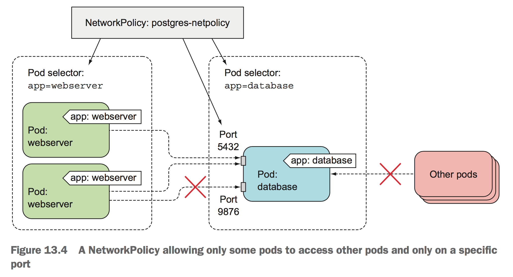
The NetworkPolicy is enforced when con- necting through a Service, AS WELL.
3.6.3 Isolate network between namespaces
apiVersion: networking.k8s.io/v1 kind: NetworkPolicy metadata: name: shoppingcart-netpolicy spec: podSelector: matchLabels: app: shopping-cart # This policy applies to pods labeled as microservice=shopping-cart. ingress: - from: - namespaceSelector: matchLabels: tenant: manning # Only pods running in namespaces labeled as tenant=manning are allowed to access the microservice. ports: - port: 80
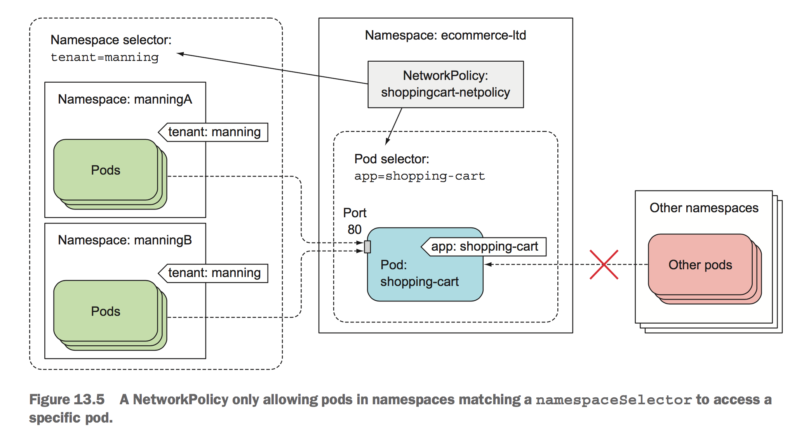
3.6.4 Isolate by CIDR notation
apiVersion: networking.k8s.io/v1 kind: NetworkPolicy metadata: name: ipblock-netpolicy spec: podSelector: matchLabels: app: shopping-cart ingress: - from: - ipBlock: cidr: 192.168.1.0/24 # This ingress rule only allows traffic from clients in the 192.168.1.0/24 IP block.
3.6.5 Limite outbound traffic
spec: podSelector: matchLabels: app: webserver # This policy applies to pods with the app=webserver label. egress: # It limits the pods' outbound traffic. - to: - podSelector: matchLabels: app: database # Webserver pods may only connect to pods with the app=database label.
4 Computation Resources
4.1 Request resources for containers
When creating a pod, you can specify the amount of CPU and memory that a container needs (these are called requests) and
a hard limit on what it may consume (known as limits).
They're specified for each container individually, not for the pod as a whole.
The pod's resource requests and limits are the sum of the requests and limits of all its containers.
4.1.1 Create pods with resource requests
apiVersion: v1 kind: Pod metadata: name: requests-pod spec: containers: - image: busybox command: ["dd", "if=/dev/zero", "of=/dev/null"] name: main # | You're specifying resource requests for the main container. resources: # | requests: # | cpu: 200m # The container requests 200 millicores (that is, 1/5 of a single CPU core's time). memory: 10Mi # The container also requests 10 mebibytes of memory.
REQUESTS don't limit the amount of CPU a container can use.
4.1.1.1 How requests affect scheduling
By specifying resource requests, you're specifying the minimum amount of resources your pod needs.
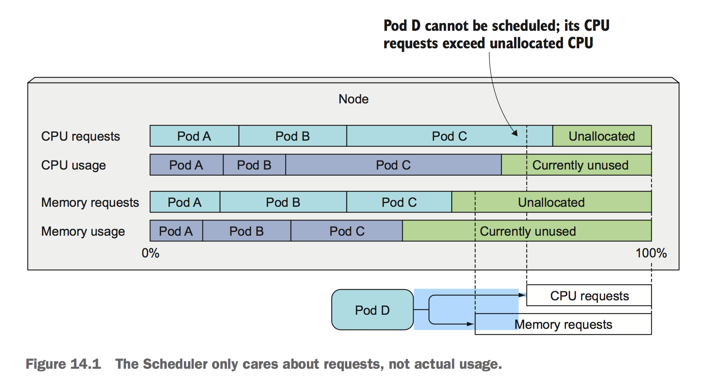
The CPU requests don't only affect scheduling, they also determine how the remaining (unused) CPU time is distributed between pods:
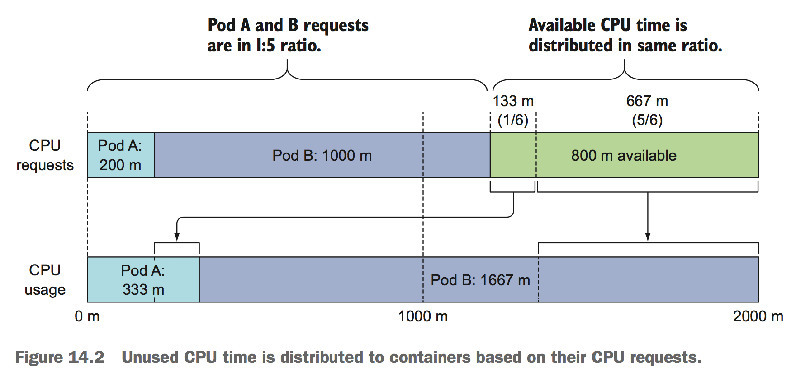
If one container wants to use up as much CPU as it can, while the other one is sitting idle at a given moment, the first container will BE ALLOWED to use the whole CPU time (minus the small amount of time used by the second container, if any). It makes sense to use all the available CPU if no one else is using it. As soon as the second container needs CPU time, it will get it and the first container will be THROTTLED BACK.
4.2 Limit resources for containers
Without limiting memory, a container (or a pod) running on a worker node may eat up all the available memory and affect all other pods on the node and any new pods scheduled to the node.
apiVersion: v1 kind: Pod metadata: name: limited-pod spec: containers: - image: busybox command: ["dd", "if=/dev/zero", "of=/dev/null"] name: main resources: limits: cpu: 1 # This container will be allowed to use at most 1 CPU core. memory: 20Mi # The container will be allowed to use up to 20 mebibytes of memory.
If you haven’t specified any resource requests, they’ll be set to the SAME VALUES AS THE RESOURCE LIMITS.
4.2.1 Exceeding limits
Unlike resource requests, resource limits aren't constrained by the node's allocatable resource amounts.
The sum of all limits of all the pods on a node is allowed to exceed 100% of the node's capacity.
When 100% of the node's resources are used up, certain containers will need to be killed.
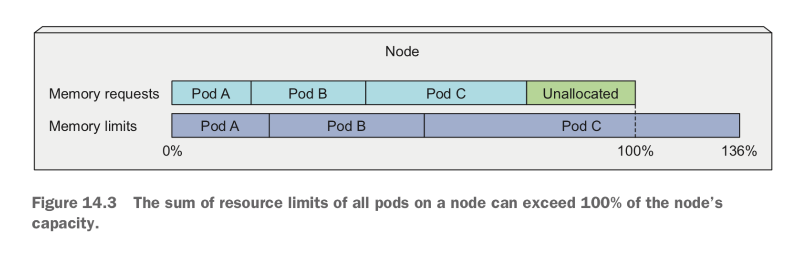
For CPU
When a CPU limit is set for a container, the process isn’t given more CPU time than the config- ured limit.
For Memory
When a process tries to allocate memory over its limit, the process is killed ( the container is OOMKilled ).
If the pod is killed and its restart policy is set to Always or OnFailure, the process is restarted immediately. But if it keeps going over the memory limit and getting killed, Kubernetes will begin restarting it WITH INCREASING DELAYS between restarts. You’ll see a CrashLoopBackOff status in that case. The CrashLoopBackOff status doesn't mean the Kubelet has given up. It means that after each crash, the Kubelet is INCREASING THE TIME PERIOD BEFORE restarting the container. After the first crash, it restarts the container immediately and then, if it crashes again, waits for 10 seconds before restarting it again. On subsequent crashes, this delay is then increased EXPONENTIALLY to 20, 40, 80, and 160 seconds, and FINALLY limited to 300 seconds. Once the interval hits the 300-second limit, the Kubelet keeps restarting the container INDEFINITELY EVERY FIVE MINUTES until the pod either stops crashing or is deleted.
Containers always see the node's memory and cpu, NOT the container's. You get the configured CPU limit by reading the following files: - /sys/fs/cgroup/cpu/cpu.cfs_quota_us - /sys/fs/cgroup/cpu/cpu.cfs_period_us
4.3 Pod QoS classes
Kubernetes makes priority by categorizing pods into three Quality of Service (QoS) classes:
- BestEffort (the lowest priority)
- Burstable
- Guaranteed (the highest)
QoS class is not assignable to pods through a separate field in the manifest. It is derived from the combination of resource requests and limits for the pod's containers.
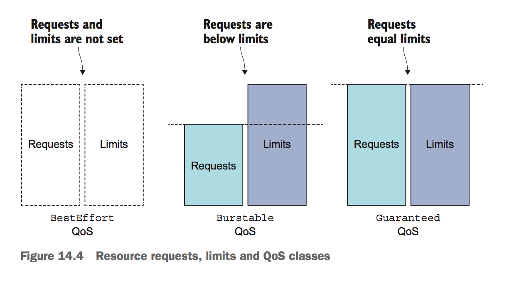
QoS classes are a PROPERTY OF PODS, not containers.
4.3.1 Kill Pod according to QoS
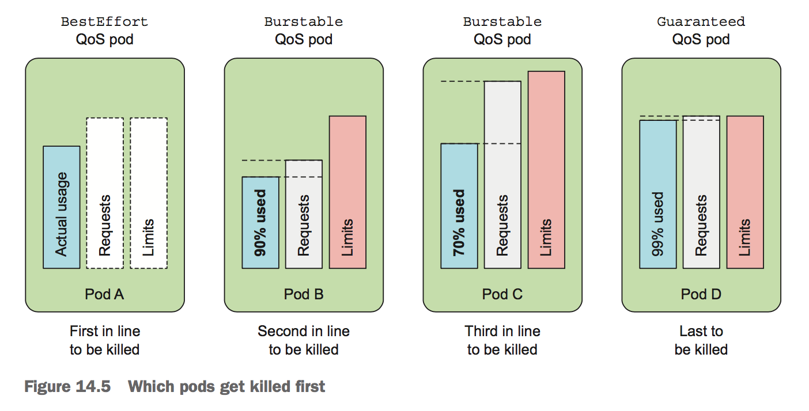
4.4 Set default requests/limits for pods per ns
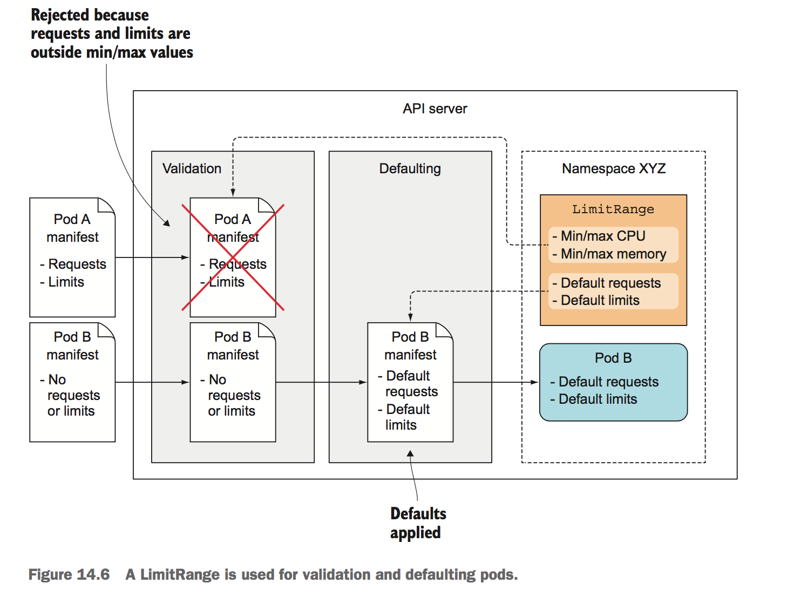
apiVersion: v1 kind: LimitRange metadata: name: example spec: limits: - type: Pod # Specifies the limits for a pod AS A WHOLE min: cpu: 50m # | Minimum CPU and memory all the pod's containers can request in total memory: 5Mi # | max: cpu: 1 # | Maximum CPU and memory all the pod's containers can request (and limit) memory: 1Gi # | - type: Container # The container limits are specified below this line. defaultRequest: # Default requests for CPU and memory that will be applied to containers that don't specify them explicitly cpu: 100m memory: 10Mi default: # | Default limits for containers that don't specify them cpu: 200m # | memory: 100Mi min: # | Minimum and maximum requests/limits that a container can have cpu: 50m # | memory: 5Mi # | max: # | cpu: 1 # | memory: 1Gi maxLimitRequestRatio: # | Maximum ratio between the limit and request for each resource cpu: 4 # | memory: 10 # | - type: PersistentVolumeClaim # A LimitRange can also set the minimum and maximum amount of storage a PVC can request. min: storage: 1Gi max: storage: 10Gi
LimitRange apply to the SUM of all the pod's containers' requests and limits.
4.5 Limit total resources available in ns
ResourceQuota Admission Control plugin checks whether the pod being created would cause the configured ResourceQuota to be exceeded.
If that's the case, the pod's creation is rejected.
A ResourceQuota limits the amount of computational resources the pods and the amount of storage PersistentVolumeClaims in a namespace can consume.
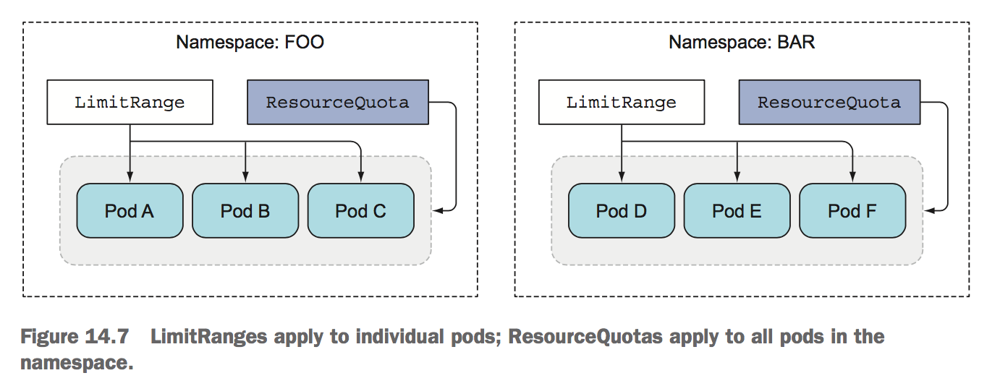
If ResourceQuota is created, LimitRange shall be also created ALONG WITH IT.
4.5.1 For CPU and Memory
apiVersion: v1 kind: ResourceQuota metadata: name: cpu-and-mem spec: hard: requests.cpu: 400m requests.memory: 200Mi limits.cpu: 600m limits.memory: 500Mi
When a quota for a specific resource (CPU or memory) is configured (request or limit), pods need to have the request or limit (respectively) set for that same resource; otherwise the API server will not accept the pod. That's why having a LimitRange with defaults for those resources can make life a bit easier for people creating pods.
4.5.2 For persistent storage
apiVersion: v1 kind: ResourceQuota metadata: name: storage spec: hard: requests.storage: 500Gi ssd.storageclass.storage.k8s.io/requests.storage: 300Gi standard.storageclass.storage.k8s.io/requests.storage: 1Ti
4.5.3 For number of objects
apiVersion: v1 kind: ResourceQuota metadata: name: objects spec: hard: pods: 10 replicationcontrollers: 5 secrets: 10 configmaps: 10 persistentvolumeclaims: 5 services: 5 services.loadbalancers: 1 services.nodeports: 2 ssd.storageclass.storage.k8s.io/persistentvolumeclaims: 2
4.5.4 For pod states and/or QoS classes
apiVersion: v1 kind: ResourceQuota metadata: name: besteffort-notterminating-pods spec: scopes: - BestEffort - NotTerminating hard: pods: 4
4.6 Resource usage Monitoring
Kubelet itself contains an agent called cAdvisor, which performs the basic collection of resource consumption data for both
individual containers running on the node and the node as a whole.
Gathering those statistics centrally for the whole cluster requires you to run an additional component called Heapster.
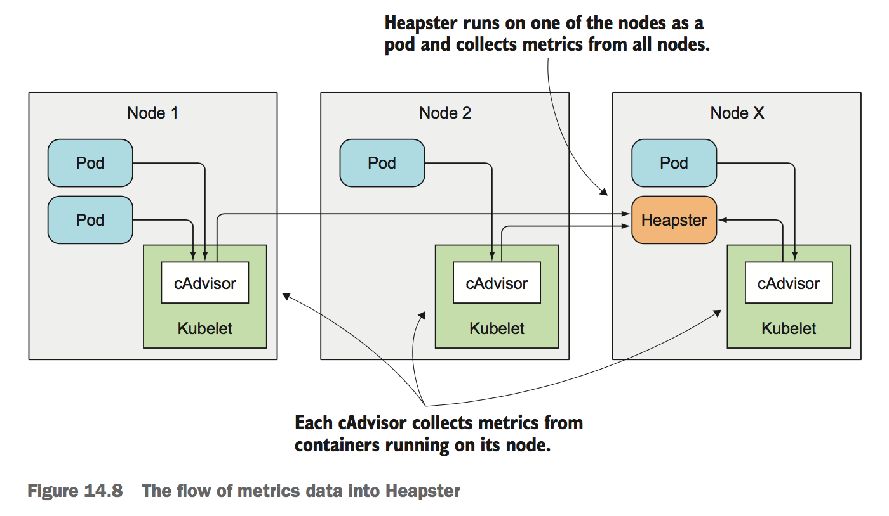
It's Heapster that connects to all the cAdvisors, and it's the cAdvisors that collect the container and node usage data without having to talk to the processes running inside the pods' containers.
Running Heapster in your cluster makes it possible to obtain resource usages for nodes and individual pods through the kubectl top command:
(kubectl top command gets the metrics from Heapster, which aggregates the data over a few minutes and doesn't expose it immediately)
$ kubectl top node NAME CPU(cores) CPU% MEMORY(bytes) MEMORY% minikube 170m 8% 556Mi 27% # This shows the actual (current) CPU and memory usage of ALL THE PODS running on the node # Displaying CPU and memory usage for individual pods $ kubectl top pod --all-namespaces NAMESPACE NAME CPU(cores) MEMORY(bytes) kube-system influxdb-grafana-2r2w9 1m 32Mi kube-system heapster-40j6d 0m 18Mi # To see resource usages across individual containers kubectl top pod --containers
4.6.1 Analyzing resource usage with Grafana
$ kubectl cluster-info monitoring-grafana is running at https://192.168.99.100:8443/api/v1/proxy/namespaces/kube-system/services/monitoring-grafana
or:
$ minikube service monitoring-grafana -n kube-system
Opening kubernetes service kube-system/monitoring-grafana in default browser...
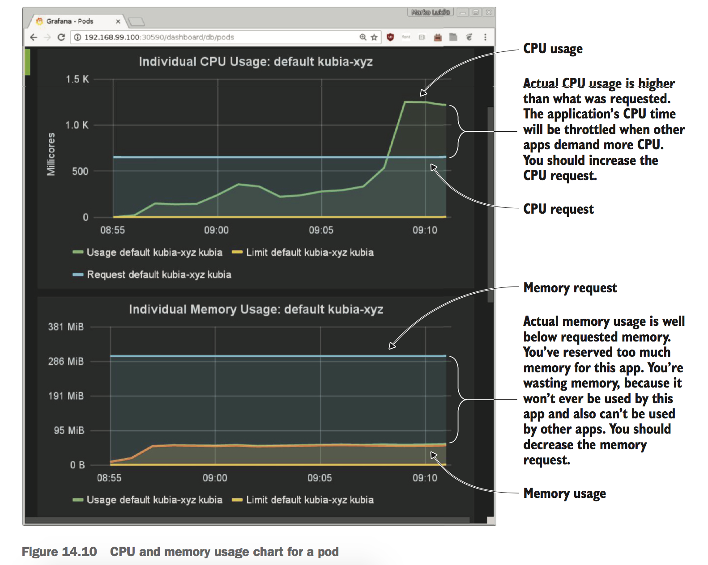
5 AutoScaling
5.1 Horizontal pod autoscaling
Horizontal pod autoscaling is the automatic scaling of the number of pod replicas managed by a controller.
It's performed by the Horizontal controller, which is enabled and configured by creating a HorizontalPodAutoscaler (HPA) resource.
Pods' containers' memory consumption isn't a good metric for autoscaling.
5.1.1 Autoscaling process
The autoscaling process can be split into three steps:
- Obtain metrics of all the pods managed by the scaled resource object.
- Calculate the number of pods required to bring the metrics to (or close to) the specified target value.
- Update the replicas field of the scaled resource.
Obtain pod metrics
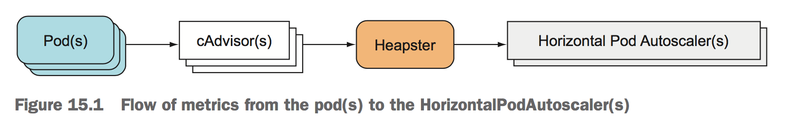 The horizontal pod autoscaler controller gets the metrics of all the pods by querying Heapster through REST calls.
Calculate required number of pods
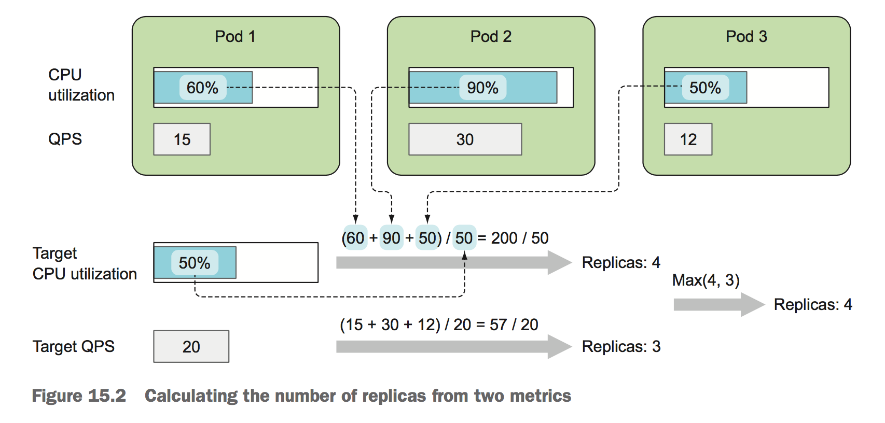
Update desired replica count
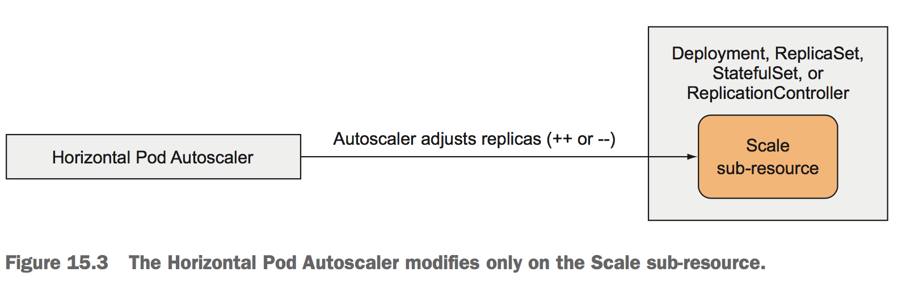 Currently the only objects you can attach an Autoscaler to:
- Deployment
- ReplicaSet
- ReplicationController
- StatefulSet
5.1.1.1 Whole picture
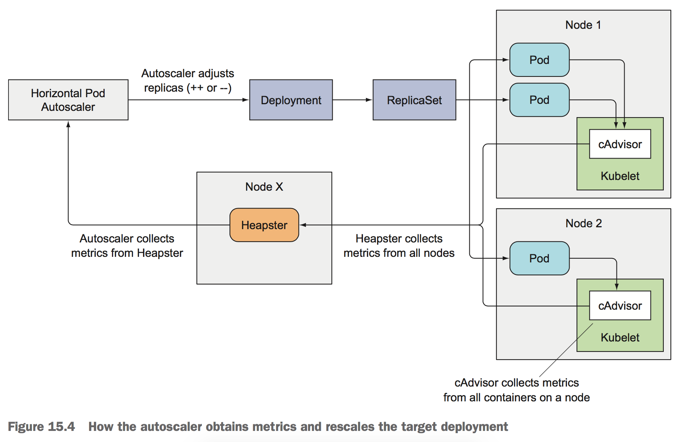
5.1.1.2 CPU utilization
As far as the Autoscaler is concerned, only the pod's guaranteed CPU amount (the CPU requests) is concerned when determining the CPU utilization of a pod.
The Autoscaler compares the pod's actual CPU consumption and its CPU requests, which means the pods you're autoscaling need to have CPU requests set.
5.1.1.3 Maximum rate of scaling
The autoscaler will at most double the number of replicas in a single operation, if more than two current replicas exist.
If only one or two exist, it will scale up to a maximum of four replicas in a single step.
A scale-up will occur only if no rescaling event occurred in the last three minutes.
A scale-down event is performed every five minutes.
5.1.2 Create HorizontalPodAutoscaler
kubectl autoscale deployment <name> --cpu-percent=30 --min=1 --max=5
5.2 Horizontal node autoscaling
5.2.1 ClusterAutoscaler
Cluster Autoscaler looks out for such pods and asks the cloud provider to start up an additional node.
5.2.1.1 Scaling up case
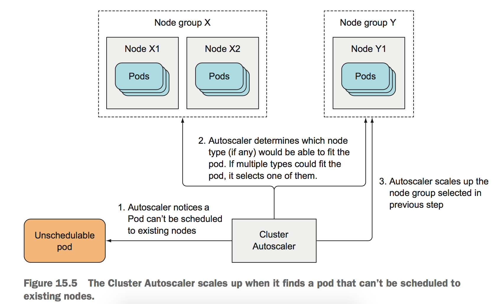
When the new node starts up, the Kubelet on that node contacts the API server and registers the node by creating a Node resource.
From then on, the node is part of the Kubernetes cluster and pods can be scheduled to it.
5.2.1.2 Scaling down case
A node will only be returned to the cloud provider if the Cluster Autoscaler knows the pods running on the node will be rescheduled to other nodes.
When a node is selected to be shut down, the node is first marked as unschedulable and then all the pods running on the node are evicted.
Because all those pods belong to ReplicaSets or other controllers, their replacements are created and scheduled to the remaining nodes
(that's why the node that's being shut down is first marked as unschedulable).
5.2.2 Manually cordon and drain nodes
A node can also be marked as unschedulable and drained manually.
This is done with the following kubectl commands:
kubectl cordon <node>Marks the node as unschedulable (but doesn't do anything with pods running on that node).
kubectl drain <node>Marks the node as
unschedulableand then evicts all the pods from the node.
In both cases, no new pods are scheduled to the node UNTIL YOU UNCORDON IT AGAIN with `kubectl uncordon <node>`.
5.2.3 PodDisruptionBudget
PodDisruptionBudget specifies minimum number of pods that need to keep running while performing scaling-down operations.
As long as PodDisruptionBudget exists, both the Cluster Autoscaler and the kubectl drain command (not including auto-scaling-down) will adhere to it.
For example, if there were four pods altogether and minAvailable was set to three, the pod eviction process would evict pods one by one,
waiting for the evicted pod to be replaced with a new one by the ReplicaSet controller, before evicting another pod.
6 Scheduling
6.1 Node Affinity
6.1.1 Hard
apiVersion: v1 kind: Pod metadata: name: kubia-gpu spec: affinity: nodeAffinity: requiredDuringSchedulingIgnoredDuringExecution: nodeSelectorTerms: - matchExpressions: - key: gpu operator: In values: - "true" containers: - image: luksa/kubia name: kubia
At this point, affinity currently only affects pod scheduling and NEVER causes a pod to be evicted from a node. That's why all the rules right now always END WITH IgnoredDuringExecution.
6.1.2 Prioritizing
apiVersion: extensions/v1beta1 kind: Deployment metadata: name: pref spec: replicas: 5 template: metadata: labels: app: pref spec: affinity: nodeAffinity: preferredDuringSchedulingIgnoredDuringExecution: - weight: 80 preference: matchExpressions: - key: availability-zone operator: In values: - zone1 - weight: 20 # | You also prefer that your pods be scheduled to dedicated nodes, preference: # | but this is four times less important than your zone preference. matchExpressions: - key: share-type operator: In values: - dedicated containers: - args: - sleep - "99999" image: busybox name: main
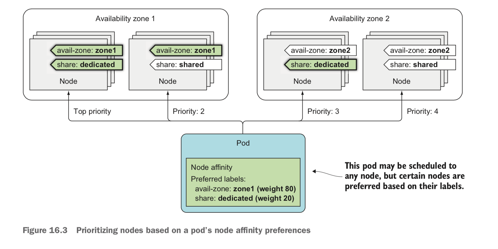
6.2 Pod Affinity
6.2.1 Hard
apiVersion: extensions/v1beta1 kind: Deployment metadata: name: frontend spec: replicas: 5 template: metadata: labels: app: frontend spec: affinity: podAffinity: requiredDuringSchedulingIgnoredDuringExecution: # Defining a hard requirement - topologyKey: kubernetes.io/hostname # The pods of this Deployment must be deployed on the same node as the pods that match the selector. labelSelector: matchLabels: app: backend containers: - name: main image: busybox args: - sleep - "99999"
The way topologyKey works is simple. The key used here isn't special. We can easily use our own topologyKey.
The only prerequisite is to add a corresponding label to nodes.
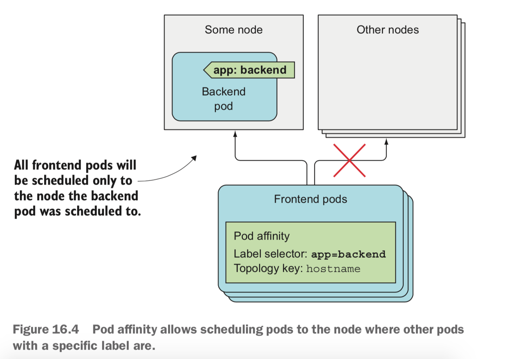
Scheduler also takes other pods’ pod affinity rules into account when scheduling pod: If you now delete the backend pod, the Scheduler will still reschedule the pod to node2. This makes sense, because otherwise if the backend pod were to be deleted by accident and rescheduled to a different node, the frontend pods' affinity rules would be broken.
6.2.2 Prioritizing
apiVersion: extensions/v1beta1 kind: Deployment metadata: name: frontend spec: replicas: 5 template: metadata: labels: app: frontend spec: affinity: podAffinity: preferredDuringSchedulingIgnoredDuringExecution: - weight: 80 podAffinityTerm: topologyKey: kubernetes.io/hostname labelSelector: matchLabels: app: backend containers: - name: main image: busybox args: - sleep - "99999"
7 Utils
7.1 YAML Basic
7.1.1 Key Value Pair
fruit: apple vegetable: carrot liquid: water meat: chicken
7.1.2 Array / List
fruits: - orange - apple - banana vegetables: - carrot - cauliflower - tomato
7.1.3 Dictionary / Map
banana: calories: 105 fat: 0.4 carbs: 27 grape: calories: 62 fat: 0.3 carbs: 16
7.2 Bash completion
source <(kubectl completion bash | sed s/kubectl/<your_alias>/g)
7.3 Show all supported resources
kubectl get
7.4 Expose pod through Service
kubectl expose deployment <name> --port=80 --target-port=8080
7.5 Run Temporary Pod
kubectl run -it srvlookup --image=tutum/dnsutils --rm --restart=Never -- dig SRV kubia.default.svc.cluster.local
The command runs a one-off pod (–restart=Never) called srvlookup, which is attached to the console (-it) and is deleted as soon as it terminates (–rm).
7.6 Discover possible API object fields
kubectl explain pods
You can then drill deeper to find out more about each attribute.
kubectl explain pod.spec
7.7 Forward local network port to port in the pod
Using port forwarding like this is an effective way to test an individual pod.
kubectl port-forward <pod-name> <local-port>:<pod-port>
7.8 Communicate with Pods through API Server
One useful feature of the API server is the ability to proxy connections directly to individual pods.
If you want to perform requests against your kubia-0 pod, you hit the following URL:
<apiServerHost>:<port>/api/v1/namespaces/default/pods/kubia-0/proxy/<path>
7.9 Connect to Services through API Server
Instead of using a piggyback pod to access the service from inside the cluster,
you can use the same proxy feature provided by the API server to access the service:
/api/v1/namespaces/<namespace>/services/<service name>/proxy/<path>
7.10 Obtain the log of crashed container
You can print the application’s log with kubectl logs. If your container is restarted, the kubectl logs command will show the log of the current container.
When you want to figure out why the previous container terminated, you’ll want to see those logs instead of the current container’s logs.
This can be done by using the --previous option:
kubectl logs <pod> --previous
7.11 Get IPs of all nodes
kubectl get nodes -o jsonpath='{.items[*].status.addresses[?(@.type=="ExternalIP")].address}'
To learn more about how to use JSONPath with kubectl, refer to the [To learn more about how to use JSONPath with kubectl, refer to the documentation.
7.12 Talking to API Server
7.12.1 kubectl proxy
kubectl proxy --port 8081
curl http://localhost:8081
7.12.2 From in POD
export CURL_CA_BUNDLE=/var/run/secrets/kubernetes.io/serviceaccount/ca.crt TOKEN=$(cat /var/run/secrets/kubernetes.io/serviceaccount/token) NS=$(cat /var/run/secrets/kubernetes.io/serviceaccount/namespace) curl -H "Authorization: Bearer $TOKEN" https://kubernetes # Listing pods in the pod's own namespace curl -H "Authorization: Bearer $TOKEN" https://kubernetes/api/v1/namespaces/$NS/pods

Using Ambassador Container

7.13 Modify Deployments and other resources
7.13.1 edit
Opens the object's manifest in your default editor.
After making changes, saving the file, and exiting the editor, the object is updated.
Example: kubectl edit deployment kubia
7.13.2 patch
Modifies individual properties of an object.
Example:
kubectl patch deployment kubia -p '{"spec": {"template": {"spec": {"containers": [{"name": "nodejs", "image": "luksa/kubia:v2"}]}}}}'
7.13.3 apply
Modifies the object by applying property values from a full YAML or JSON file.
If the object specified in the YAML/JSON doesn't exist yet, it's created.
The file needs to contain the full definition of the resource
(it can't include only the fields you want to update, as is the case with kubectl patch).
Example: kubectl apply -f kubia-deployment-v2.yaml
7.13.4 replace
Replaces the object with a new one from a YAML/JSON file.
In contrast to the apply command, this command requires the object to exist; otherwise it prints an error.
Example: kubectl replace -f kubia-deployment-v2.yaml
7.13.5 set image
Changes the container image defined in a Pod, ReplicationController's template, Deployment, DaemonSet, Job, or ReplicaSet.
Example: kubectl set image deployment kubia nodejs=luksa/kubia:v2
7.14 Check status of Control Plane components
$ kubectl get componentstatuses NAME STATUS MESSAGE ERROR scheduler Healthy ok controller-manager Healthy ok etcd-0 Healthy {"health": "true"}
7.15 WATCHING Resources
kubectl get po --watch
7.16 Observing cluster events
Both the Control Plane components and the Kubelet emit events to the API server as they perform these actions.
If an event occurs multiple times, the event is displayed only once by kubectl get events,
showing when it was first seen, when it was last seen, and the number of times it occurred.
Watching events with the --watch option is much easier on the eyes and useful for seeing what’s happening in the cluster:
kubectl get events --watch
7.17 Forcely shutdown pod
kubectl delete po mypod --grace-period=0 --force
7.18 Copy file from/to container
kubectl cp foo-pod:/var/log/foo.log foo.log kubectl cp localfile foo-pod:/etc/remotefile
7.19 Mounting local files into the minikube vm
You can mount your local filesystem into the Minikube VM using the minikube mount command and then
mount it into your containers through a hostPath volume.
See documentation
7.20 Using minikube docker daemon
eval $(minikube docker-env)
7.21 Build images locally and load remotely
docker save <image> | (eval $(minikube docker-env) && docker load)
7.22 kubectl config
7.22.1 Location of kubeconfig file
You can use multiple config files and have kubectl use them all at once by specifying all of them in the KUBECONFIG environment variable
(separate them with a colon).
7.22.2 Contents of kubeconfig file
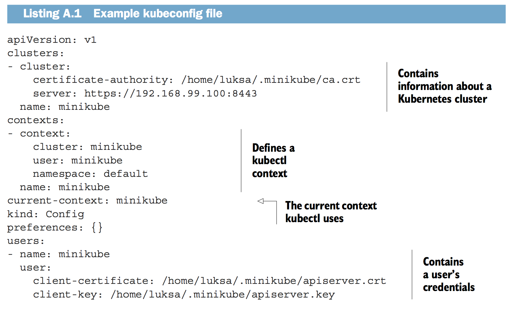
The kubeconfig file consists of four sections:
- A list of clusters
- A list of users
- A list of contexts
- The name of the current context
A context ties together a cluster, a user, and the default namespace kubectl should use when performing commands.
While there can be multiple contexts defined in the kubeconfig file, at any given time only one of them is the current context.
7.22.3 Name of current context
kubectl config current-context
7.22.4 Switch to different namespace
alias kcd='kubectl config set-context $(kubectl config current-context) --namespace '
You can then switch between namespaces using kcd <some-namespace>
7.22.5 Switching between contexts
kubectl config use-context my-other-context
7.22.6 List contexts and clusters
kubectl config get-contexts kubectl config get-clusters